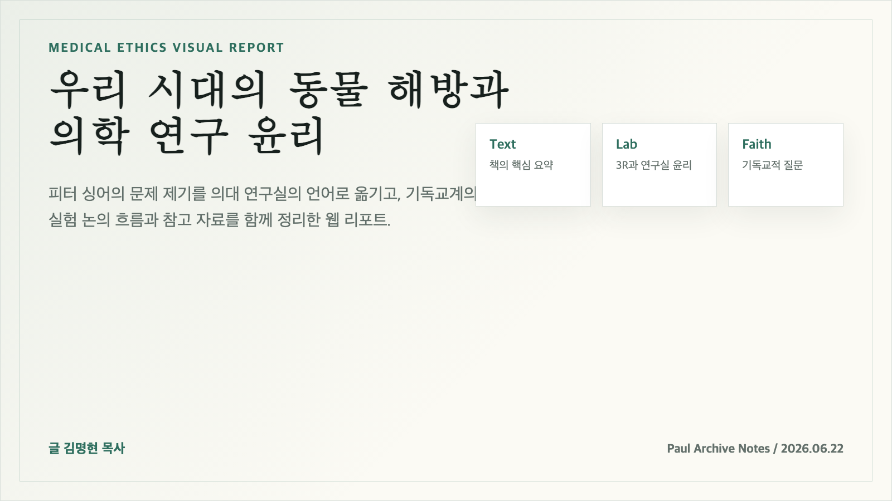

인간 중심 관성
인간의 고통은 크게, 동물의 고통은 작게 평가하는 습관은 연구실의 편익 계산 안에서도 반복될 수 있다.
Medical Ethics Visual Report
피터 싱어의 문제 제기를 의대 연구실의 언어로 옮겨, 동물 실험의 정당화 책임과 3R 원칙, 그리고 기독교적 관점에서 남는 물음을 한 장의 흐름으로 정리했다.

Core Concept
인간의 고통은 크게, 동물의 고통은 작게 평가하는 습관은 연구실의 편익 계산 안에서도 반복될 수 있다.
싱어의 핵심은 지능이나 언어가 아니라 고통을 느끼는 능력을 윤리적 고려의 출발점으로 삼는 데 있다.
Text Summary
피터 싱어의 『Animal Liberation』은 1975년에 처음 출간된 뒤 동물권 논의의 기준점을 바꾼 책이고, 2023년 개정판 『Animal Liberation Now』에서 공장식 축산, 실험동물, 소비 윤리의 자료를 현재 상황에 맞게 다시 정리했다. 이 리포트는 그 책을 의학 연구실의 문제로 좁혀 읽는다.
책의 핵심은 “인간과 동물이 같으냐”가 아니라 “고통을 느낄 수 있는 존재의 고통을 어떤 이유로 덜 중요하게 취급할 수 있느냐”이다. 싱어는 이를 종차별주의라는 말로 설명하고, 동물 실험을 인간의 이익이라는 이름으로 너무 쉽게 정당화해 온 관행을 비판한다.
의대 연구실에서 이 책을 읽는다는 것은 모든 동물 실험을 즉시 같은 방식으로 금지하자는 결론보다 먼저, 실험의 필요성·대체 가능성·고통의 정도·보고의 투명성을 실질적으로 묻는 일이다. 기독교적 독해는 여기에 한 가지 질문을 더한다. 인간 생명을 돌보는 연구가 하나님의 피조물을 대하는 방식에서도 생명 존중의 흔적을 남기고 있는가?
Lab Question
의학적 필요와 기대 편익을 명확히 한다.
동물 없이 답할 수 있는 방법을 먼저 찾는다.
고통과 편익의 균형을 공개적으로 점검한다.
재현 가능한 방식으로 결과를 남긴다.
Decision Checklist
3R Framework
3R은 동물 실험을 자동으로 정당화하는 문구가 아니라, 연구자가 매 단계에서 입증해야 할 최소 기준이다.
Lab Practice
목적과 필요성을 기록하고, 대체 가능성과 고통 완화 계획을 먼저 검토한다.
마취와 진통, 사육 환경, 중단 기준을 지속적으로 점검한다.
ARRIVE 기준에 맞춰 보고하고, 재현 가능성을 확보해 불필요한 반복을 줄인다.
Christian Ethics Today
가톨릭 교리서와 프란치스코 교황의 『찬미받으소서』는 동물 실험을 인간 생명 돌봄에 기여하고 합리적 한계 안에 있을 때만 도덕적으로 허용될 수 있다고 말한다. 흐름은 “인간에게 필요하면 된다”에서 “필요성, 한계, 고통 방지가 입증되어야 한다”로 옮겨 간다.
창세기의 다스림은 점점 착취의 면허가 아니라 책임 있는 돌봄으로 해석된다. 동물은 인간의 도구일 뿐이라는 관점보다, 하나님이 기뻐하시는 피조세계의 구성원이라는 관점이 더 강하게 부상한다.
기독교 내부에는 동물권·채식·비거니즘까지 요청하는 급진적 동물신학도 있지만, 의학 연구 현장에서는 즉각 폐지보다 대체, 축소, 고통 완화, 투명한 보고, 심의 강화라는 실천적 기준으로 논의가 모인다.
오늘의 질문은 “실험이 합법인가”에 머물지 않는다. 기독교적 연구자는 연구비, 성과, 논문 생산의 압력 속에서 말하지 못하는 생명의 고통을 제도적으로 보이지 않게 만들고 있지는 않은지 묻게 된다.
Critical Review
고통이라는 기준은 직관적이며, 동물 실험의 정당화 책임을 연구자에게 되돌려준다. 연구 설계의 투명성과 엄밀성을 요구한다는 점에서도 실천적 힘이 있다.
모든 판단을 고통과 편익 비교로 환원할 위험이 있다. 현실적 결론은 즉각적 폐지보다 기준 강화, 대체 연구 확대, 보고 책임의 제도화에 가깝다.
Further Reading
동물실험 논문이 방법, 표본 수, 무작위화, 눈가림, 결과 해석을 어떻게 보고해야 하는지 제시하는 대표 가이드라인이다.
PLOS Biology 논문 보기3R 원칙의 현재적 설명과 연구기관·규제·펀딩에서 이 원칙이 어떻게 쓰이는지 확인할 수 있다.
NC3Rs 3R 자료 보기동물 연구 논쟁을 찬반 구도로만 보지 않고, 과학적 필요성과 윤리적 비용을 함께 검토하는 보고서다.
Nuffield 보고서 보기동물에게 도덕적 지위가 있는가, 있다면 그 근거가 고통·권리·관계 중 어디에 놓이는가를 개관한다.
SEP 항목 보기동물 실험의 조건부 허용, 인간 권력의 한계, 피조세계의 온전성에 대한 기독교적 기준을 확인할 수 있다.
교리서 2417-2418 보기유럽의 동물실험 규제는 3R과 투명성, 장기적 대체 방향을 제도화하는 흐름을 보여준다.
EU 자료 보기이 리포트의 출발점이 되는 개정판. 종차별주의, 고통의 동등 고려, 공장식 축산과 실험동물 문제를 다룬다.
HarperCollins 책 정보 보기싱어의 공리주의와 달리 권리론의 관점에서 동물 윤리를 전개하는 고전이다.
UC Press 책 정보 보기기독교 전통 안에서 동물을 신학적으로 어떻게 보아야 하는지 본격적으로 다룬 대표 저작이다.
University of Illinois Press 보기동물에 대한 기독교 윤리를 식생활, 연구, 인간 실천 전반으로 확장해 분석한다.
Bloomsbury 책 정보 보기고통 최소화만이 아니라 동물이 자기 종다운 삶을 펼칠 수 있는 능력의 조건을 묻는 최근 논의다.
Simon & Schuster 책 정보 보기동물에 대한 기독교 윤리를 대중 독자가 읽을 수 있게 정리한 책으로, 연구·식생활·반려동물 문제를 함께 다룬다.
저자 책 소개 보기Christian Questions
창세기의 다스림은 착취의 허가인가, 돌봄과 책임의 명령인가?
인간 생명을 살리기 위한 연구라면 동물의 고통은 어디까지 감수될 수 있는가?
말하지 못하는 피조물의 고통은 신앙의 책임 밖에 있는가?